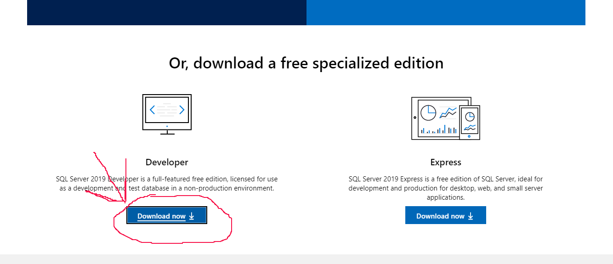
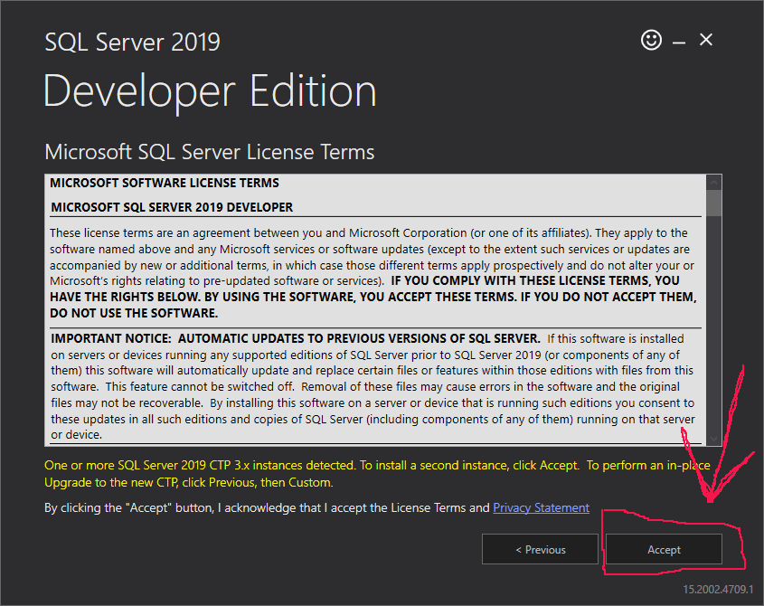
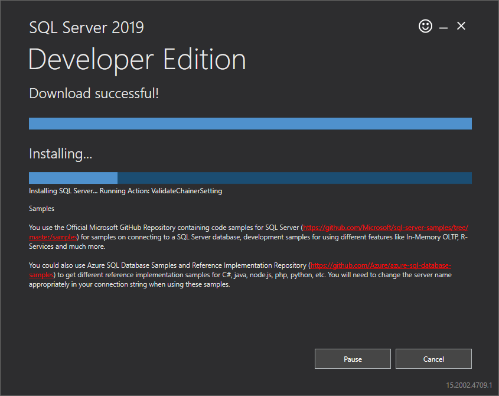
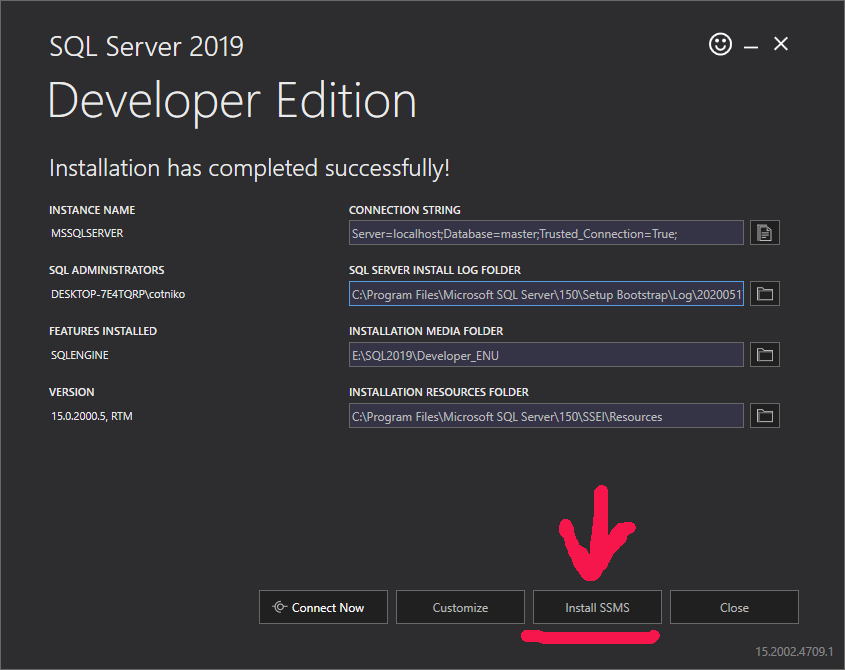
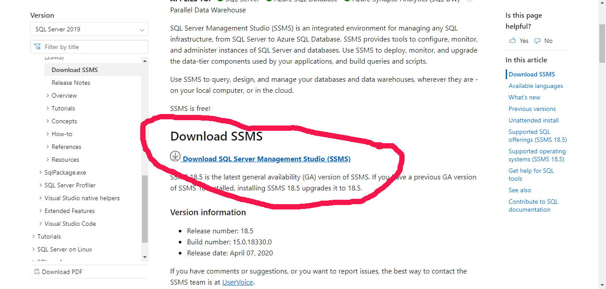
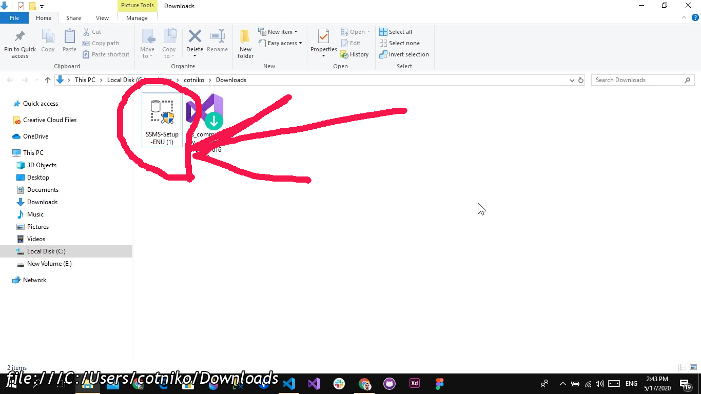
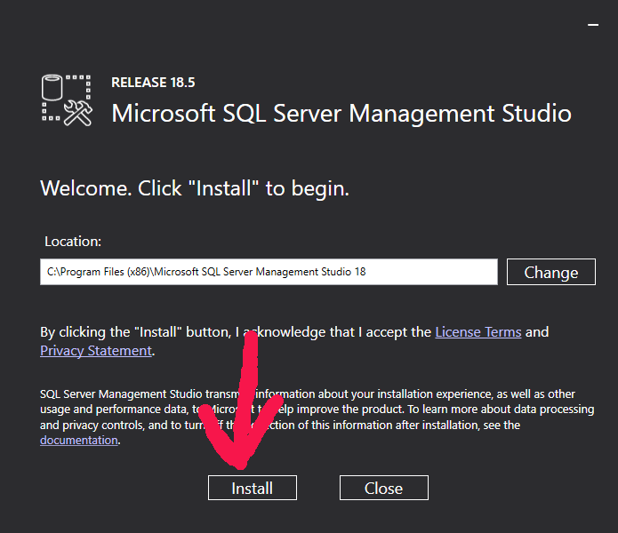
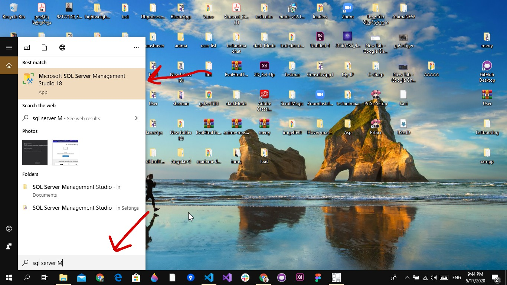

SQL-EXPRESS
SQL-EXPRESS -ის გადმოწე შეგიძლიათ https://www.microsoft.com/en-us/sql-server/sql-server-downloads მისამართზე

გადმოწერის შემდეგ გადმოწერილ ფაილს ვაკლიკებთ ორჯერ გამოჩნდება ოპაპი
სადაც ვაკლიკებთ Yes -ზე
შემდეგ გამოჩნდება ოპაპი სადაც ავირჩევთ Basic
შემდეგ
შემდეგ
თუ გიჩვენებთ რო არ არის საკმარისი სივრცე მაშინ
ვპოულობთ ნაკლებად გადავსებულ ადგილს
თუ თქვენს კომპიუთერში დეფაულთად არჩეულ დისკზე არის საკმარისი სივრცე
დასაინსტალირებლად
შეგიძლიათ დაინსტალიროთ პირდაპირ

შემდეგ
დაელოდეთ გადმოწერას როცა დაინსტალირებს გადაგიყვანთ სხვა გვერძე იქ კი აირჩიეთ instan SSMS
ჩამოტვირთეთ
შემდეგ დაკლიკეთ ორჯერ. ოპაპზე ავირჩევთ Yes
შემდეგ ვაინსტალირებთ
დაინსტალირების შემდეგ შეგვიძლია უკვე მოძებნა
